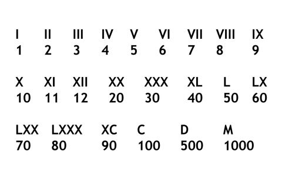

On veut du code maintenable (qu'on peut changer facilement).
Limiter le cout des changments (bug, regressions, tests manuels)
Pour pouvoir changer le code il faut qu'il soit testé automatiquement
Pour que le code soit testable il faut qu'il ai été créé a partir des tests.
Red
Pas de code (de production) sans test
Ajouter juste assez de code pour le faire compiler
Lancer le test qui doit échouer
Green
Ecrire l'implémentation
le plus rapidement possible
Refactor
Nettoyer le code (Code smells)
Supprimer la duplication
Améliorer la lisibilité
Kata 1: FizzBuzz
Si le nombre est divisible par 3, on le remplace par Fizz, Si le nombre est divisible par 5, on le remplace par Buzz, Si le nombre est divisible par 3 et 5, alors on le remplace par FizzBuzz Dans tous les autres cas, on retourne le nombre sous forme de chaine de carractères.
Rétro
Tips
Ajouter un nouveau test seulement en étape "vert"
S'assurer que le test est bien "rouge" avant de coder la feature
Coder dans l'optique de revenir au plus vite au vert
On refactor soit le code soit les tests mais pas les 2 en même temps
@Test
public void testShouldReturnHelloWorldWhenNothing() {
// Arrange / Given
MaClasse monObjet = new MaClasse();
// Act / When
String resultat = monObjet.maMethodeATester();
// Assert / Then
assertEquals("Hello World!", resultat);
}
Tooling
Autorun tests: Infinitest
Assertions: AssertJ
Mockito: Mocks
Maitrisez vos outils
CTRL+SHIFT+F (Formating)
ALT+SHIFT+L (Extract Local Variable)
ALT+SHIFT+M (Extract Method)
CTRL+1 (Quick Fix)
CTRL+SHIFT+L (Liste des raccourcis)
Kata 2: Roman Numerals

Aide
Comment choisir le prochain test ?
Le plus simple qui de la valeur
Quelle est l'implémentation la plus simple ?
Est ce que j'ai éliminé tout ce qui ressemblait de près ou de loin à de la duplication ?